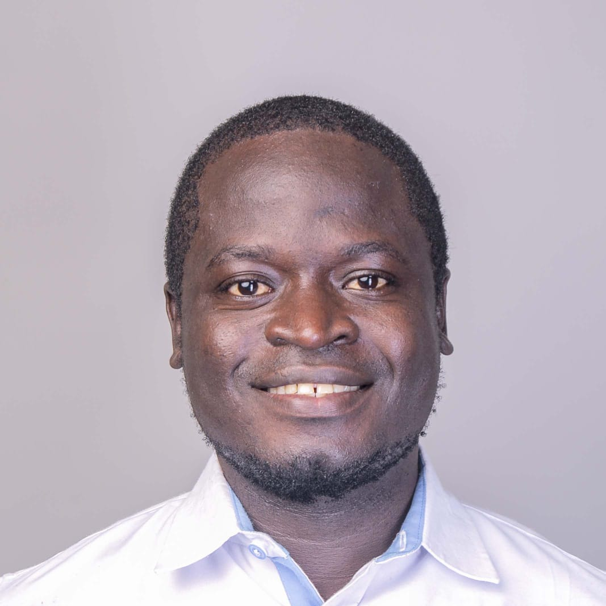

"My mother left for work before sunrise every day and still fell further behind — not because she lacked effort, but because no one had ever taught her mathematics. That observation became a conviction, and that conviction became a career."
Project & Programme Manager — Inclusive Education & Community Development
Specializing in Kenya, Tanzania, Uganda & refugee-camp programming (Kakuma & Kalobeyei). Five-plus years designing data-driven, community-rooted programmes for underserved and refugee youth.

A short positioning statement, and the day-to-day work behind the numbers.
I am an Education & Community Development professional with 5+ years of experience designing inclusive, data-driven programmes that empower underserved youth and refugee populations — from digitising community libraries across 30+ sites in Nairobi's informal settlements to classrooms in Kajiado, Mombasa, the Mt. Kenya region, Arusha (Tanzania), and specialised refugee-camp programming in Kakuma and Kalobeyei.
My work sits at the intersection of programme management, monitoring & evaluation, and EdTech integration — translating donor requirements and community needs into delivery plans field teams can run, and turning field data into decisions leadership can act on.
How programme skills translate into field results, with the tools and frameworks behind each one.
Each uses the STAR-L framework (Situation, Task, Action, Result, Learnings), built around a stated Theory of Change. Click through for the full detail.
Kakuma Refugee Complex & Kalobeyei Settlement, plus Tanzania & Uganda. Extending gamified digital learning to 400+ refugee learners.
Kenya & Tanzania, including Kajiado, Kibera, and Mathare. A Training-of-Trainers model reaching 1,650+ women and 200+ men.
Mathare, Nairobi. Co-founded and direct an 8+ year initiative now reaching 500+ children through 3 institutional partnerships.
Site counts shown are each programme's own reported figures and aren't cumulative — some sites overlap across programmes.
"The strongest programmes aren't the ones with the most sites on a map — they're the ones where a facilitator in Kajiado can run a session the same way, to the same standard, whether or not I'm in the room that day." — on why the Training-of-Trainers model sits at the centre of this work
Four highlights below; the full set — including peer and leadership perspectives from an international cohort — is on the Recommendations page.
"He's thorough in tracking program spend, quick to flag discrepancies, and always professional... It's genuinely refreshing to work with a program lead who takes financial accountability as seriously as program impact."
"He's someone who follows through, communicates clearly, and genuinely wants the team to succeed. I'd gladly work with David on any project again."
"David brings a grounded, practical perspective shaped by years of real community work in Kajiado... He's collaborative, dependable, dynamic, and genuinely invested in the people around him."
"David's dedication to inclusive education and stakeholder engagement is exemplary... His management of multi-site EdTech initiatives, community library digitisations, refugee-camp programming, and adherence to rigorous safeguarding standards have transformed learning outcomes for thousands of vulnerable youth."
Open to Program and Project Manager roles in inclusive education, community development, and refugee-camp programming — across Kenya, the wider East Africa region, or remote-first international teams.